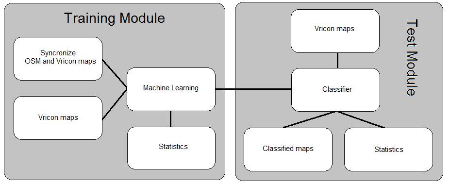
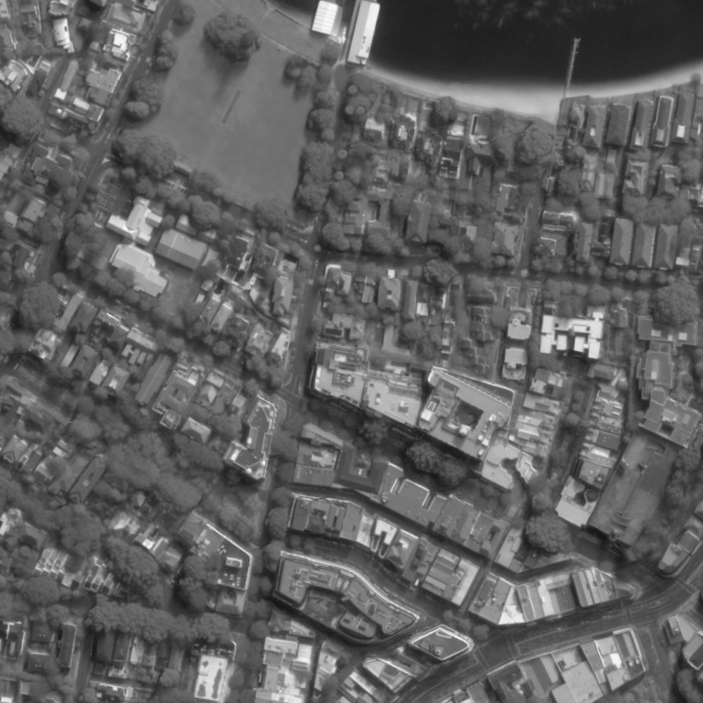
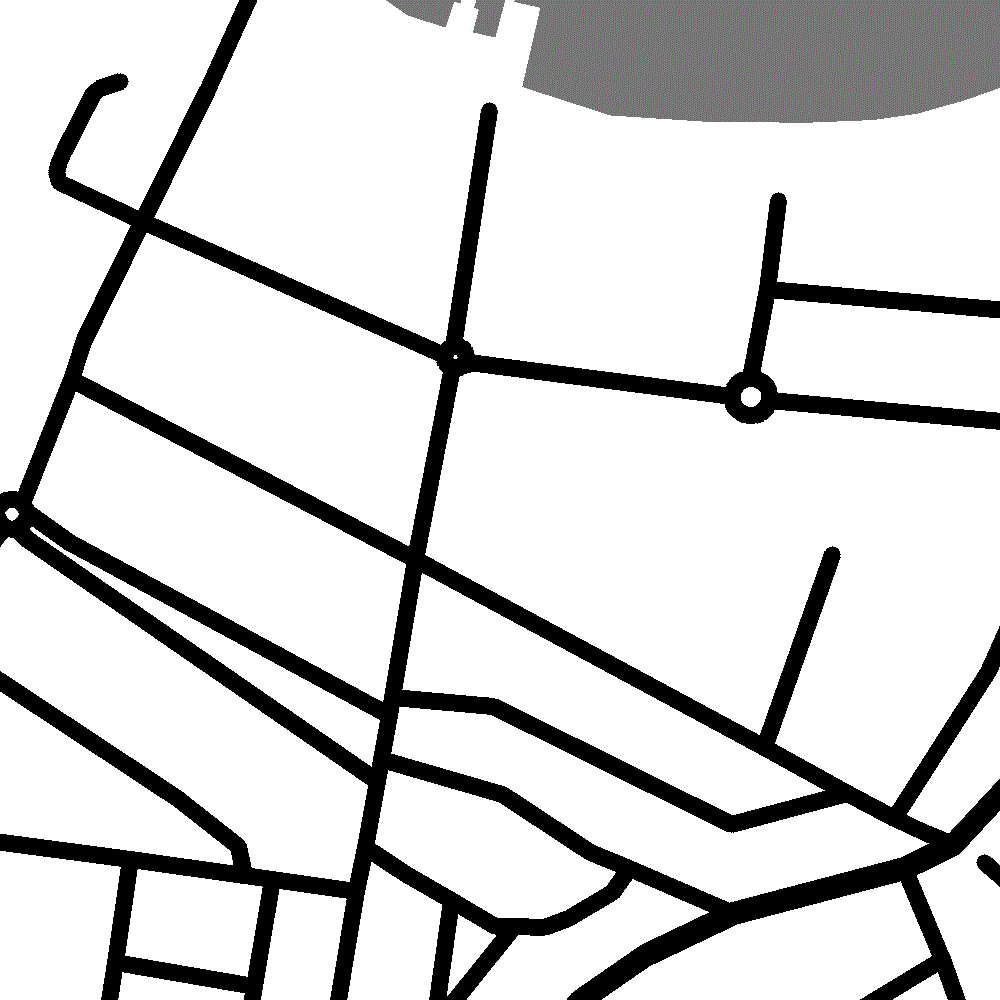
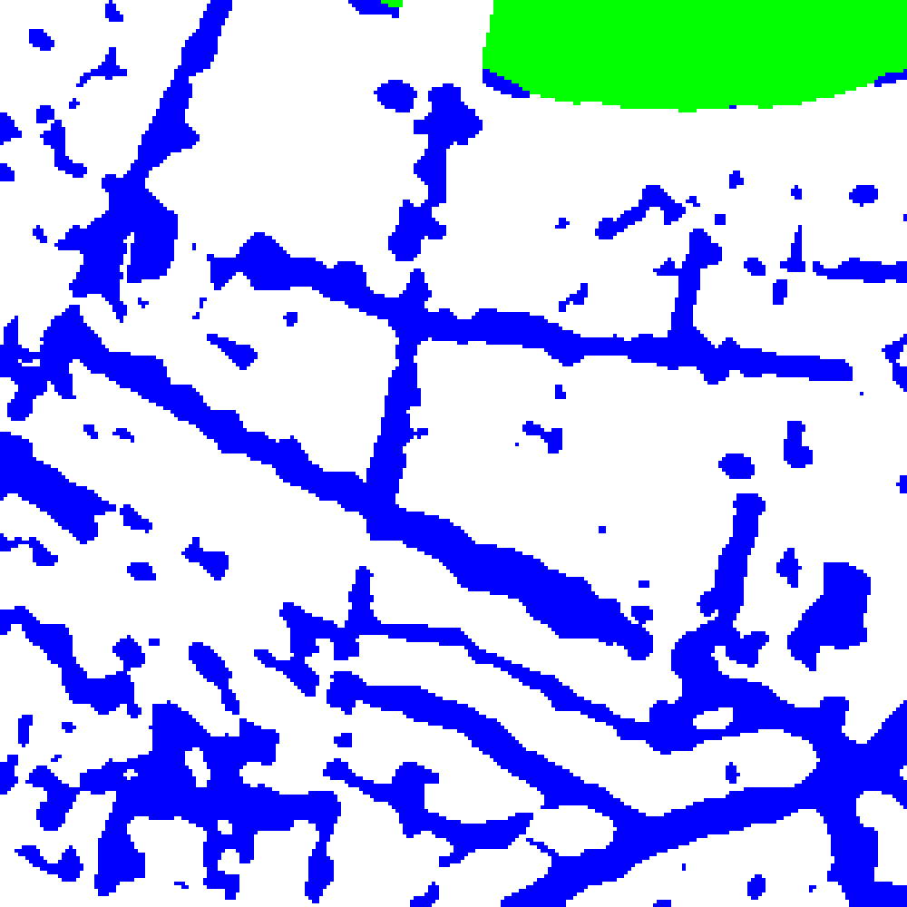
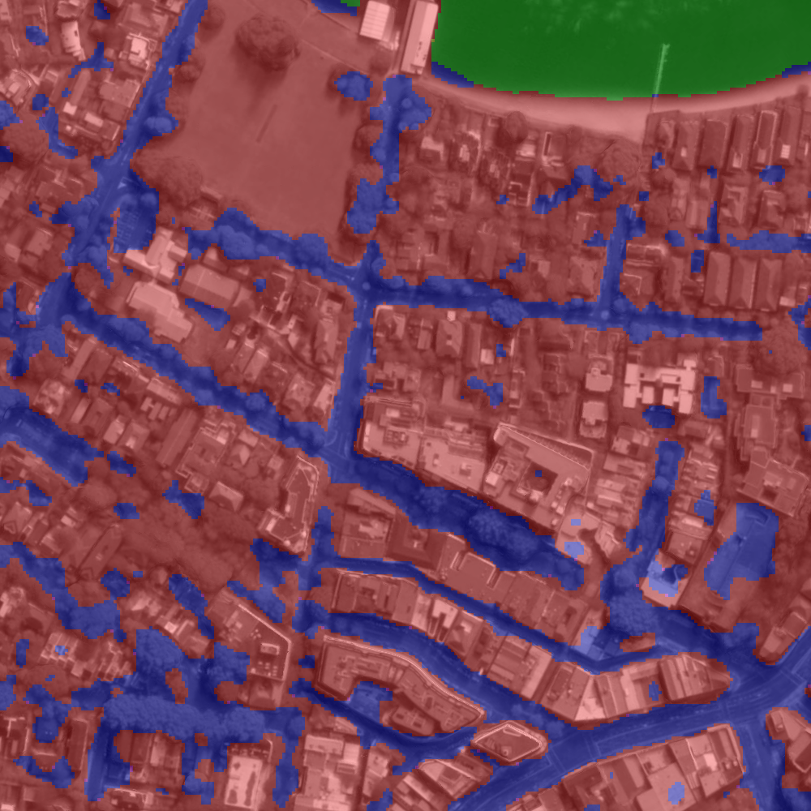
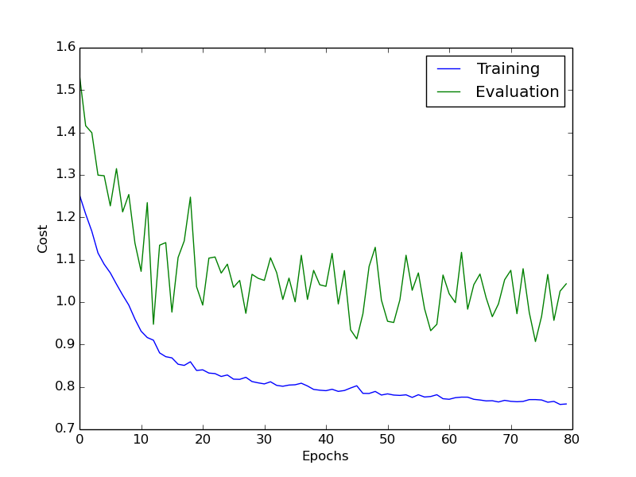

WELCOME TO THE CARTOMATIC PROJECT WEBSITE

This site is a part of a project in the course TSBB11, "Bilder och Grafik", at Linköping University during the autumn period of 2015. The project topic is classification of objects in satellite images. The project is done by requst of Vricon, an international company working with satellite images and 3D models.
THE PROJECT GROUP
The project group consists of six students at Linköping University
Karin Stacke
Joakim Svensk
Hannes Järrendahl
Gustav Tapper
Patrik Tosteberg
Sara Shimekaw
THE PROJECT
Introduction
With today's technology it is possible to get very high resolution images of the entire earth. This data could be used to create accurate and up-to-date maps. Creating these maps by hand would be very time consuming and the demand of up-to-date would not be met. There is therfore a need for an automated classification system.
Vricon is an international company that developes photo realistic 3D maps of the globe based on satellite images. They requsted a method to classify objects, mainly roads and water, in their satellite images. The method should make use of neural networks to learn itself and improve the classification quality.
Technology
The developed system can classify roads and water in satellite images from Vricon. The system consists of two modules, a training module and a test module, as seen in the figure below.

The training module takes care of data pre-processing and training of a neural network. In short, training of a neural network is done by making an estimation of the wanted result based on input data and then changing how different input data is weighed and iterating the estimation many times. To verify the estimated result in order to change the weights in the right direction, a ground truth of the wanted result is needed. As ground truth for the developed system, maps from OpenStreetMap was used. OpenStreetMap (OSM) is an open-source online world map that allows private users from all over the world to contribute with geographic information.
For more reading about neural networks, the website http://neuralnetworksanddeeplearning.com/ is recomended.
The test module takes care of testing the resulting network and evaluating the classification quality. To evaluate the classification quality, a classified area is compared to the ground truth in the same area. The final system can take a satellite image from Vricon as input and automatically download data from OSM over the same area. The system creates a ground truth image by processing the OSM data. The ground truth image is then used to train the nerual network. The system outputs a classified image and statistics about the classification. The statistics is collected both during training and testing phases and is an important part of the result.
PROJECT RESULT
The result of the project is both classified images and statistics from the classification. The final result is presented as a number of images and tables below.
Images

Satellite image from Vricon, used as input.

Ground truth image from processed OpenStreetMap data.

Classified image, where green is water and blue roads.

The classified image blended onto the originall satellite image.
Statistis

Graph showing the cost (measurement of classification error) as it decreases with the number Epochs (iterations).
More tables...